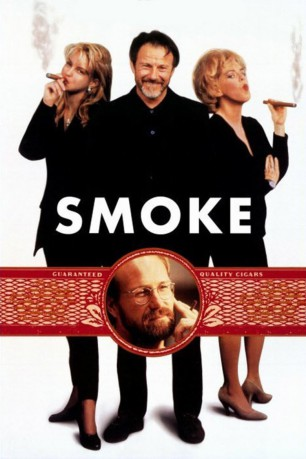

#6893 Smoke - Raucher unter sich
Alternativ: Smoke
 
 IMDB-Wertung: 7.4 / 10
IMDB-Wertung: 7.4 / 10  Metascore: 0
Metascore: 0 
Für die Menschen in Brooklyn, Ecke Third Street und Seventh Avenue, ist Auggie Wrens Tabakladen das Zentrum des Universums. Jeden Tag treffen sie sich auf ein paar Zigaretten, tauschen den neuesten Klatsch aus und sparen dabei auch die eigenen Probleme nicht aus. So wird Auggie selbst eines Tages urplötzlich damit konfrontiert, daß er eine erwachsene Tochter hat, die seit kurzem drogensüchtig ist.
Jahr: 1995
Dauer: 112 Minuten
FSK: 12
Land: Deutschland Studio: ArthausTonspuren: DD2.0 - ,
Untertitel:
Auflösung: 1080p (1920x1040) Größe: 8744 MB
Genre: Drama, Komödie
Regisseur: Wayne Wang, Paul Auster
Drehbuch: Paul Auster
Soundtrack:
Darsteller:
Datei: X:\1995\Smoke - Raucher unter sich (1995, FSK12, 1920x1040).mkv seit 06.09.2017
Festplatte: HD 1992-1995
 Es gibt insgesamt 85 Filme in der Gruppe '1995'
Es gibt insgesamt 85 Filme in der Gruppe '1995'